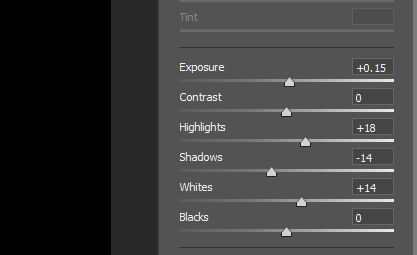

这篇文章上次修改于 194 天前，可能其部分内容已经发生变化，如有疑问可询问作者。

黑白图片在某些场景下有其独特的风格，在人像摄影中可以体现出一种另类的雕塑感，下面通过实例介绍如何从一个彩色图片处理为一张黑白效果。使用的工具主要是 gradient map 和 camera raw。
下面是原始图片：
首先在原图上方建立 gradient map 图层，gradient map 的作用是根据图像的亮度分布进行颜色替换：
首先将下方的 method 改为 classic，这样过渡效果更加平顺一些：
默认是一个反色效果渐变，点击渐变条，修改其属性为左边黑色右边白色：
下面我们增加黑白色差效果，调节左侧下方滑块可以使得黑色区域更黑，调节右侧下方滑块可以使得白色区域更白，调节中间滑块可以调节黑白区域范围：
调节到合适效果后确认即可，这样我们初步就有了一个效果。
下面为了让背景更加黑，我们通过选取提取出背景，创建一个纯黑背景。选中图像图层，选区工具下选中 select and mask：
点击 select subject 可以自动选中主体：
点击 color aware 和 shift edge 调节选区边沿：
确认后可以获取到主体的选取，创建一个 solid color 黑色图层，选中蒙版，ctrl I 反转选区即可：
放大我们可以发现主体边沿和背景没有完美的融合，这时可以通过复制刚才的 gradient map 图层强化黑白效果，然后通过笔刷工具将复制的图层只保留主体边沿部分，注意使用笔刷的时候不透明度调节稍微低一些：
基本效果已经可以了，下面调节细节部分，首先眼睛需要提亮，新建 curves 图层，提亮曲线后反转蒙版，使用笔刷工具涂抹出眼睛的亮度：
黑白图片效果一般在提高锐度的时候会更加具有特点，下面我们通过 camera raw 来做调整。
首先快捷键 ctrl shift alt E 盖印图层，然后转换为 smart object 方便后期返回来调整参数：
然后点击 filter - camera raw filter 进入编辑模式。
为了更加强烈的反差，我首先调节了亮度参数：

然后就是锐化的重点 - 提高 clarity 清晰度参数，注意不要调的过高而失真：
完成后保存返回 Photoshop，适当调节不透明度使图片更加自然：
最终效果如下：
没有评论